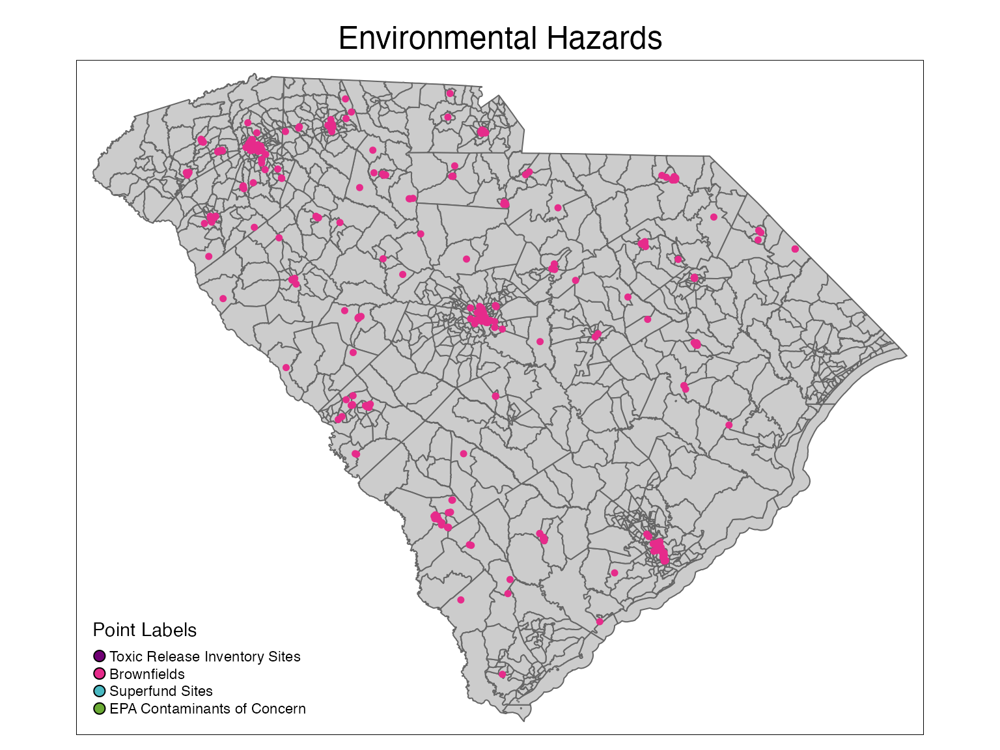

mapping_point_data.Rmd
library(dhomer)
library(tigris)
#> To enable
#> caching of data, set `options(tigris_use_cache = TRUE)` in your R script or .Rprofile.
library(sf)
#> Linking to GEOS 3.8.1, GDAL 3.2.1, PROJ 7.2.1
library(tmap)
library(tmaptools)The datastes are not saved as spatial objects, rather with latitude and longitude columns, so we must first convert all of the point data into spatial objects with st_as_sf
sc_tracts <- tracts(state = 45)
data("superfund")
data("brownfields")
data("tri")
data("contaminants")
data("free_clinics")
data("health_facilities")
data("hrsa")
data("markets")
data("libraries")
data("markets")
data("pharmacies")
data("public_schools")
data("recreation")
data("transit_terminals")
superfund_map <- superfund %>%
st_as_sf(coords = c('lon', 'lat'), crs = st_crs(sc_tracts))
brownfields_map <- brownfields %>%
st_as_sf(coords = c('lon', 'lat'), crs = st_crs(sc_tracts))
tri_map <- tri %>%
st_as_sf(coords = c('lon', 'lat'), crs = st_crs(sc_tracts))
contaminants_map <- contaminants %>%
st_as_sf(coords = c('lon', 'lat'), crs = st_crs(sc_tracts))
clinics_map <- free_clinics %>%
st_as_sf(coords = c('lon', 'lat'), crs = st_crs(sc_tracts))
facilities_map <- health_facilities %>%
st_as_sf(coords = c('lon', 'lat'), crs = st_crs(sc_tracts))
hrsa_map <- hrsa %>%
st_as_sf(coords = c('lon', 'lat'), crs = st_crs(sc_tracts))
libraries_map <- libraries %>%
st_as_sf(coords = c('lon', 'lat'), crs = st_crs(sc_tracts))
markets_map <- markets %>%
st_as_sf(coords = c('lon', 'lat'), crs = st_crs(sc_tracts))
pharmacies_map <- pharmacies %>%
st_as_sf(coords = c('lon', 'lat'), crs = st_crs(sc_tracts))
schools_map <- public_schools %>%
st_as_sf(coords = c('lon', 'lat'), crs = st_crs(sc_tracts))
rec_map <- recreation %>%
st_as_sf(coords = c('lon', 'lat'), crs = st_crs(sc_tracts))
transit_map <- transit_terminals %>%
st_as_sf(coords = c('lon', 'lat'), crs = st_crs(sc_tracts))
plot1 <- tm_shape(sc_tracts) +
tm_polygons(col = '#CCCCCC') +
tm_layout(main.title = 'Environmental Hazards',
main.title.position = c('center','top')) +
# tm_shape(tri_map) +
# tm_dots(size = 0.1, col = '#700074') +
tm_shape(brownfields_map) +
tm_dots(size = 0.1, col = '#E62B8B') +
# tm_shape(superfund_map) +
# tm_dots(size = 0.1, col = '#4AB9C2') +
# tm_shape(contaminants_map) +
# tm_dots(size = 0.1, col = '#6BAB34') +
tm_add_legend(title = 'Point Labels', type = 'symbol',
labels = c('Toxic Release Inventory Sites', 'Brownfields',
'Superfund Sites','EPA Contaminants of Concern'),
col = c('#700074','#E62B8B','#4AB9C2','#6BAB34'))
plot1
plot2 <- tm_shape(sc_tracts) +
tm_polygons(col = '#CCCCCC') +
tm_layout(main.title = 'Healthcare Resources',
main.title.position = c('center','top')) +
tm_shape(facilities_map) +
tm_dots(size = 0.1, col = '#E41A1C') +
tm_shape(pharmacies_map) +
tm_dots(size = 0.1, col = '#1F9E89FF') +
tm_shape(hrsa_map) +
tm_dots(size = 0.1, col = '#FFD92F') +
tm_shape(clinics_map) +
tm_dots(size = 0.1, col = '#0D0887FF') +
tm_add_legend(title = 'Point Labels', type = 'symbol',
labels = c('Pharmacies', 'Licensed Health Facilities',
'HRSA Health Facilities','Free Clinics'),
col = c('#E41A1C','#1F9E89FF','#FFD92F','#0D0887FF'))
plot2
Social, Education, and Community Resources